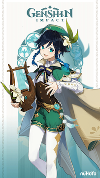
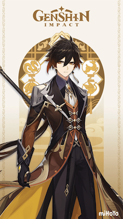
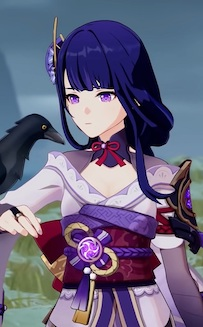
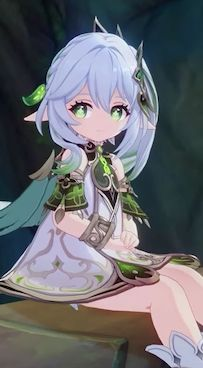
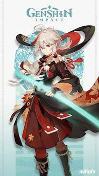
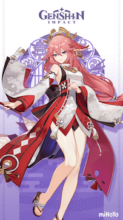
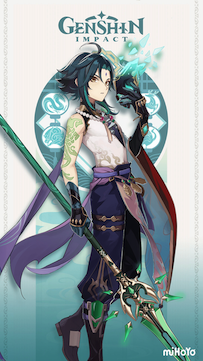
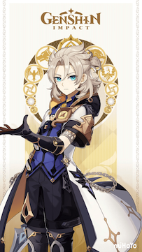

This is Venti, the current archon residing over Mondstadt.
He is the god of freedom and the symbol of anemo.

This is Zhongli, the current archon residing over Liyue.
He is the god of contracts and the symbol of geo.

This is Raiden Ei, which can also be seen as the Raiden Shogun
(her identical puppet). She is the current archon residing
over Inazuma. She is the god of eternity and the sympol of electro.

This is Kusanali, the current archon residing over Sumeru, upon
the latest update. She is the god of wisdom and the symbol of
dendro. She is also the youngest archon.
It's important to note that this game is a continuous story based on
updates. The remaining archons and nations have not been released yet.
Some Characters I Like

Above is an image of Kazuha, my personal favorite to play with.
He is an anemo sword user that fled from Inazuma.

Above is Yae Miko, she is an electro catalyst user (a catalyst
is a book that creates elemental reactions). She is a powerful
figure in Inazuma.

Above is Xiao, a yaksha (spirit) from Liyue. He served in
countless battles and remains the last of his comrades.

Above is Albedo, an alchemist from Mondstadt. He is highley
intelligent and if I explain further, it would be spoilers.
Video of Kazuha Kaedehara
Short excerpt taken from Kazuha's
character demo. All copyright belongs to Cognosphere.
There is also no sound.